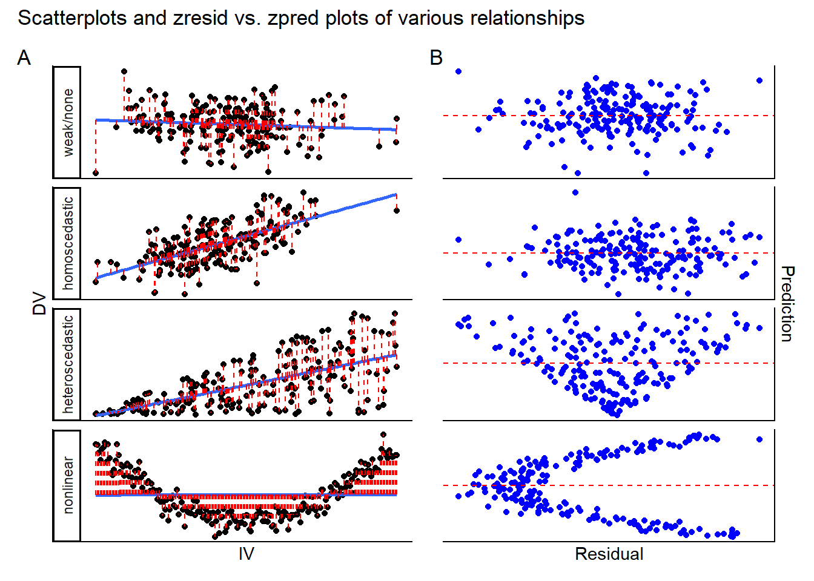

10 Multiple regression
10.1 Learning goals
10.1.1 Conceptual
- Check understanding of the assumptions associated with regression models
10.1.2 SPSS
- Run multiple linear regression, check assumptions and interpret output
10.2 Assumptions of linear regression
In this course, we will focus on the following assumptions of linear regression:
- Linearity: every independent variable should have a linear relationship with the dependent variable. This assumption is violated if at least one independent variable has a relationship with the dependent variable which is not linear (i.e., curvilinear). Should this be the case, the linear model which you fit will give very biased results, missing the true nature of the relationship between IV(s) and DV. Note that the assumption is not necessarily violated when there appears to be no clear relationship at all between IV(s) and DV; this simply means that the IV might has no predictive power with respect to the DV.
- Testing the assumption: run scatterplots for each IV against the DV, looking for any clear non-linear relationships. If you do not find these, the assumption is likely upheld.
- Testing the assumption: run scatterplots for each IV against the DV, looking for any clear non-linear relationships. If you do not find these, the assumption is likely upheld.
- Homogeneity of residual variances/homoscedasticity: the model residuals should have a constant variance across all levels of the independent variables. In plainer words, the model should predict the DV similarly well (or poorly) across the different IV scores.
- Testing the assumption: you can recycle the scatterplots you use to check for linearity (see above), but this time you can apply a model fit line and checking for the spread of the data around it. If you see that the breadth of the cloud of points around the fit line changes as the IV scores increase (i.e., the cloud shows a funnel pattern, appearing to narrow or broaden as you read from left to right) then this could suggest that indicates that the model’s predictions for that IV are not stable, and the assumption may be violated. Additionally, you should use the zpred. vs. zresid plot for the entire model; this graphs the standardized (z-scored) predictions that the model makes for each IV-score (i.e., on your single-IV scatterplots, the point on the fit line directly above a given IV score on the x-axis) against the standardized residuals (i.e., the prediction error, or difference between the model’s prediction and the actual DV data corresponding to a particular IV score). In homoscedastic data we expect there to be no relationship between residuals and predictions, so a random-ish cloud of points is a good sign. However, if you see funnelling patterns or any other indication of a relationship between residuals and predictions, this assumption may be violated.
- Testing the assumption: you can recycle the scatterplots you use to check for linearity (see above), but this time you can apply a model fit line and checking for the spread of the data around it. If you see that the breadth of the cloud of points around the fit line changes as the IV scores increase (i.e., the cloud shows a funnel pattern, appearing to narrow or broaden as you read from left to right) then this could suggest that indicates that the model’s predictions for that IV are not stable, and the assumption may be violated. Additionally, you should use the zpred. vs. zresid plot for the entire model; this graphs the standardized (z-scored) predictions that the model makes for each IV-score (i.e., on your single-IV scatterplots, the point on the fit line directly above a given IV score on the x-axis) against the standardized residuals (i.e., the prediction error, or difference between the model’s prediction and the actual DV data corresponding to a particular IV score). In homoscedastic data we expect there to be no relationship between residuals and predictions, so a random-ish cloud of points is a good sign. However, if you see funnelling patterns or any other indication of a relationship between residuals and predictions, this assumption may be violated.
- No high multicollinearity among independent variables: independent variables should not be too strongly correlated with each other. Where IVs are strongly correlated with each other, the regression coefficients become difficult to interpret because they they represent the unique contribution of each variable to the DV, holding other IVs constant.
- Testing the assumption: You can compute Pearson’s \(r\) for all combinations of your independent variables. Ignore the p-values and look at the correlation coefficients: in this course, we will tolerate coefficients with an absolute value smaller than .8.
The plots below can help you with diagnosing assumption violations.
10.2.1 Explainer video
[mult reg, example ntb]